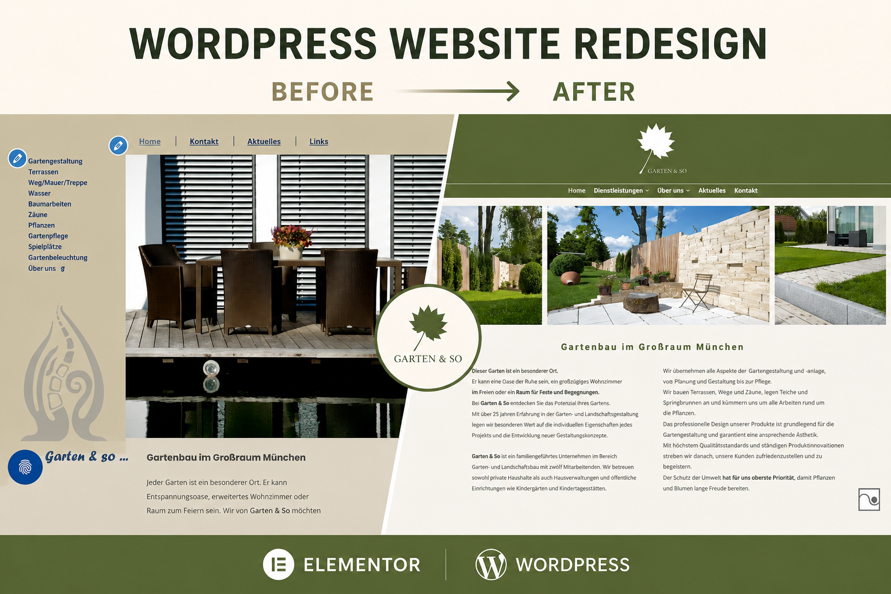
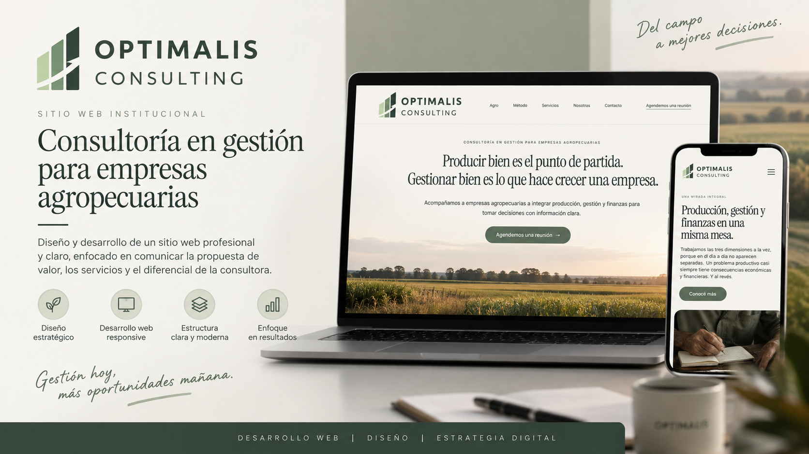
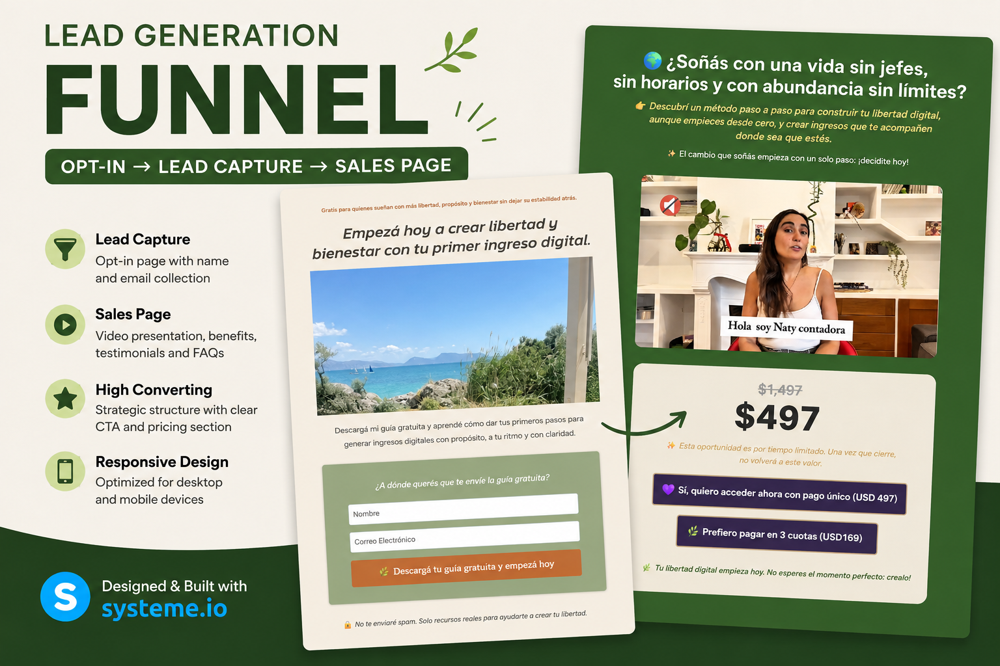

Mis proyectos
Garten&So
Rediseño y migración de un sitio web desarrollado en WordPress, trabajando con Elementor y Astra para modernizar su estructura, navegación y experiencia visual.
Ver proyecto →
Optimalis Consulting
Diseño y desarrollo de un sitio web corporativo para una consultora, trabajando la estructura, los servicios y la comunicación de la marca.
Ver proyecto →
Landing Page & Funnel de Ventas
Diseño y desarrollo de una landing page y un funnel de ventas como parte de mi formación en marketing digital, trabajando la estructura, el contenido y el recorrido del usuario desde la página de captura hasta la oferta.
Ver proyecto →
CHALTREK
Diseño y desarrollo de un sitio web turístico para una agencia receptiva de la Patagonia Argentina, trabajando la estructura, el contenido, la identidad visual y la optimización inicial para buscadores.
Ver proyecto →